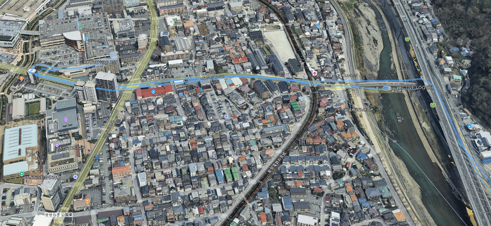
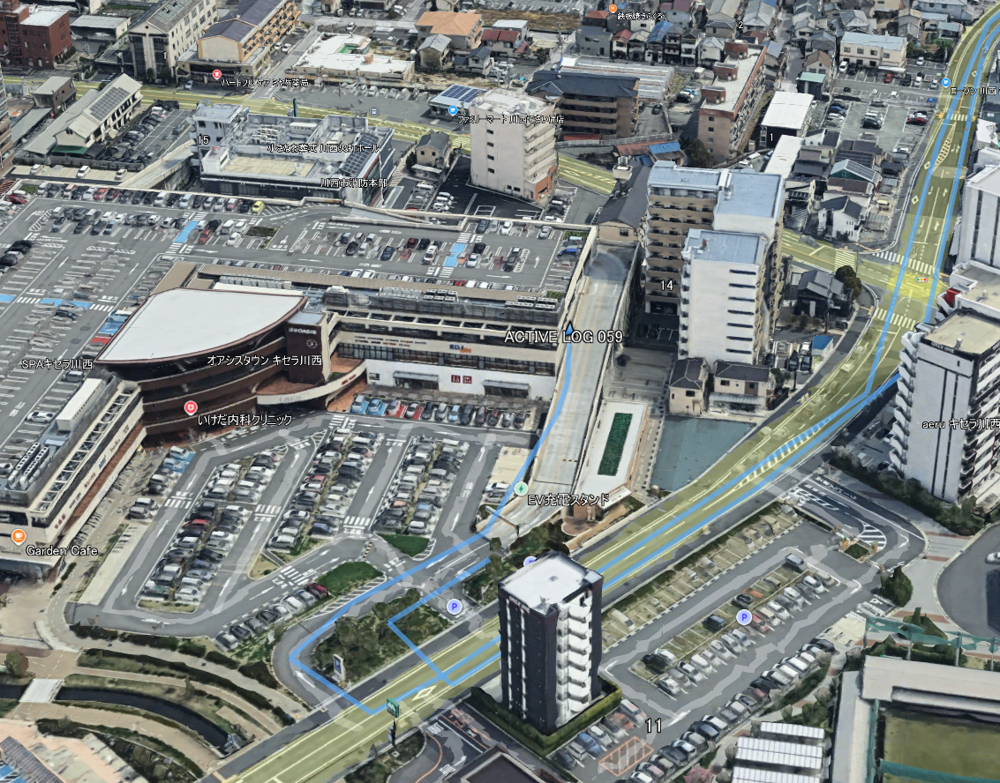

国内
とある，ショッピングセンターまで車で行ってきました，Garminは運転席わきのドリンクホルダーに置いた状態．
水色の線がトラック情報で，BaseCampから，エクスポートした*.GPXファイルをGoogleEarchで開きました．
田舎なので空が広いせいもありますが，きちんとトラッキングしていることがわかります．

ショッピングセンター近辺を拡大したものが，こちら．

入口，出口もキチンと区別してあります（右折禁止と書いてありましたが入っちゃいました．．．．）
20年以上前の機種なのに，十分な性能です．
ソルトレークシティ
このトラックは，2014年にユタ大学に訪問した時のトラック．
空港からキャンパス，キャンパス内の宿泊施設のトラッキングがうまくいっていることがわかります．
拡大すると，

ちょっと変なトラッキングもありますが，おおむね良好です，しかし広かった．．．
現代，耐えられる機種か？
と言われると，間違いなく，”十分使える”，と言えます．
バッテリーの劣化を心配する必要もなく，通信も必要としない，世界中で使える．
本体の容量がとても小さいので，大した地図はインストールできませんが，本体で完結するのではなく，記録をもどってからGooleEarthなどで閲覧するのには最適です．
もちろん，精度からいうと，現在のスマホのほうがいいでしょうし，フリーのトラッキングアプリもあるので，どうしても必要，というわけではないですが．手軽に使えるガジェットです．
来週，ちょっと遠出するので，また使ってみようと思います！